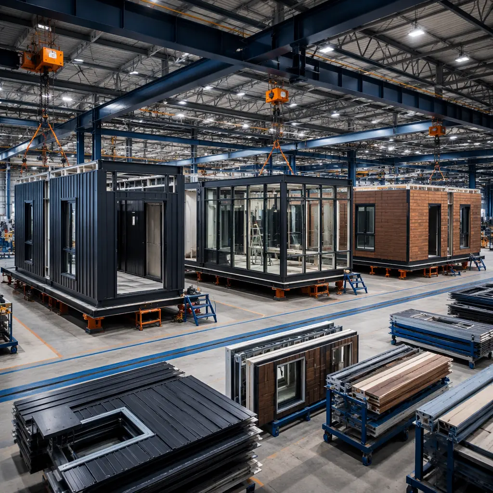
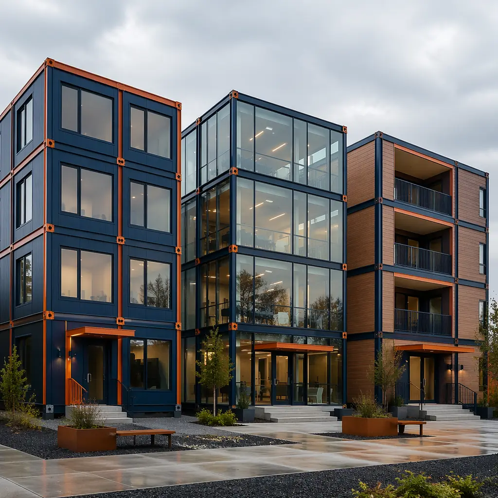
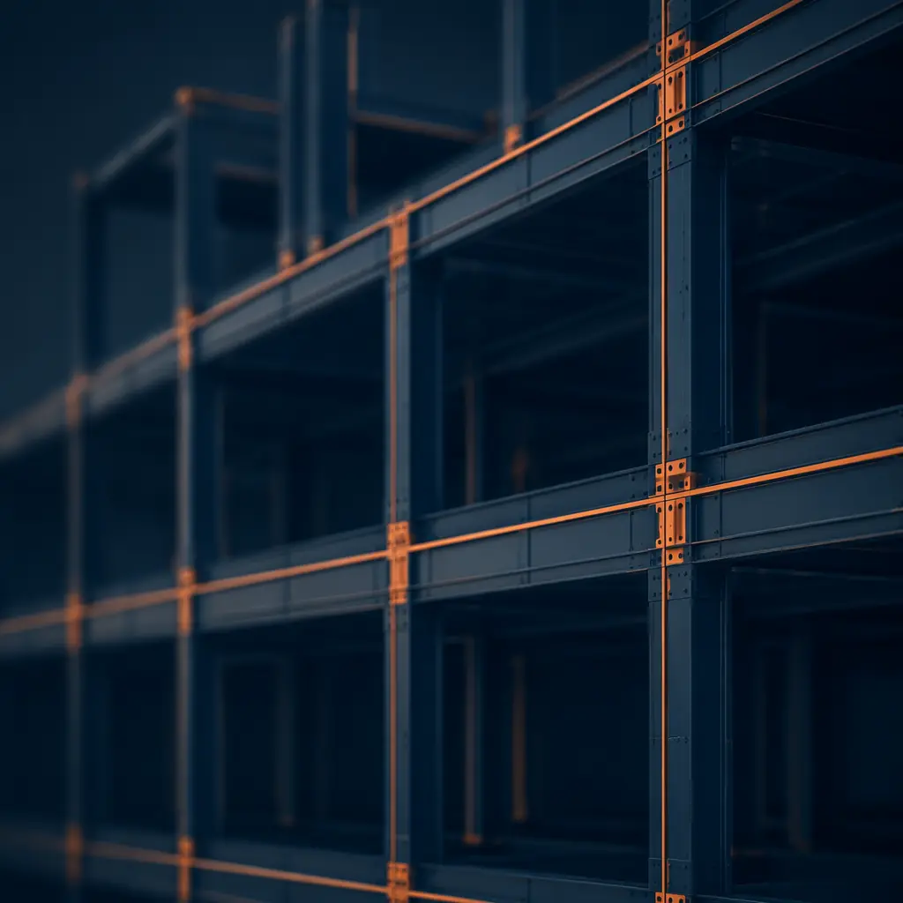
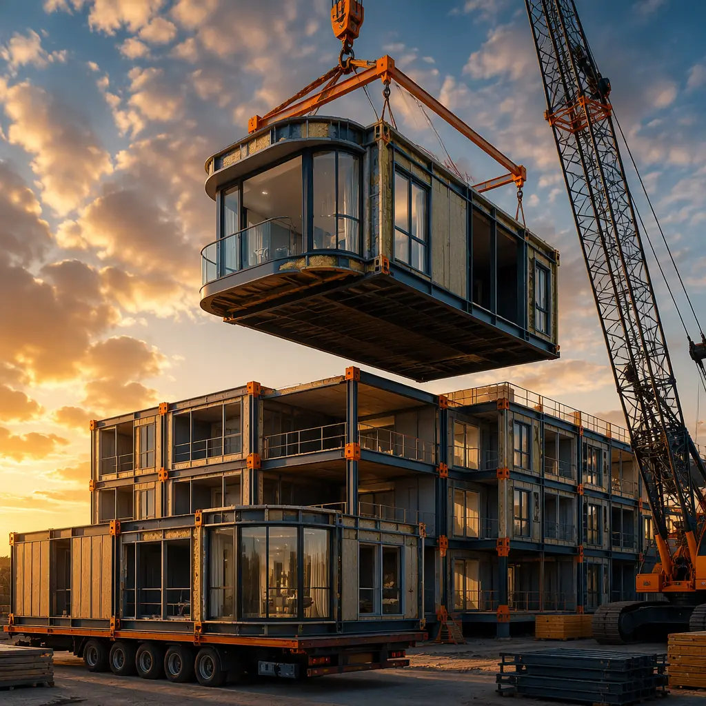

Ask ten developers what holds them back from choosing modular construction, and eight will mention the same concern: "Don't all modular buildings look the same?" The image persists — rows of identical rectangular boxes, indistinguishable from a portable classroom or construction site trailer. It's the single most persistent myth in the industry.
The reality, backed by 500+ MODURA projects across 18 countries, is fundamentally different. Modern modular construction offers design flexibility that matches — and in several critical dimensions, exceeds — what traditional site-built construction can achieve. From custom facade systems and varied rooflines to bespoke interior configurations and premium material palettes, the design toolkit is vast. The constraint isn't the method — it's the imagination of the specifier.

Why the "Cookie-Cutter" Myth Exists — and Why It's Wrong
The modular = identical misconception has historical roots. Early modular construction in the 1970s-1990s did prioritize standardization — the goal was lowest cost, not design distinction. Single-wide classrooms and temporary offices set a visual template that stuck in the public consciousness. But the industry has transformed.
Three structural changes have fundamentally altered what modular can achieve architecturally:
- Steel frame engineering: Today's modular structures use precision-engineered steel frames capable of cantilevers up to 3 meters, spans up to 12 meters without intermediate columns, and cumulative building heights of 12+ stories. The structural skeleton is as capable as any cast-in-place concrete frame.
- Facade independence: The structural module and the exterior facade are now independent systems. A single steel module frame can receive brick veneer, curtain wall glazing, fiber cement panels, zinc cladding, composite wood, or terracotta rainscreen — without changing the structural design.
- BIM-driven customization: Building Information Modeling software now manages module-level variation as easily as it manages repetition. A 100-unit apartment building with 12 different floor plan variants is no more complex to engineer than 100 identical units — the BIM handles the variation automatically.

Facade Customization: The Exterior Is Independent of the Module
The single most important fact about modular design flexibility is this: the module frame and the exterior skin are separate systems. The steel or timber frame provides structure. What you attach to the outside is limited only by budget, building codes, and design intent — not by the modular construction method itself.
Facade Systems Available for Modular Buildings
| Facade Type | Cost/sq ft | Design Impact | Best For |
|---|---|---|---|
| Curtain Wall Glazing | $40–90 | Maximum transparency, premium look | Offices, lobbies, hospitality |
| Metal Panel (ACM/Zinc) | $25–55 | Sleek, modern, color variety | Multi-family, mixed-use |
| Brick Veneer | $30–60 | Contextual, traditional look | Urban infill, historic districts |
| Fiber Cement Panel | $20–40 | Textured, matte finishes | Residential, education |
| Terracotta Rainscreen | $35–70 | Warm, natural, distinctive | Cultural, institutional |
| Composite Wood/Laminate | $28–50 | Warm, biophilic aesthetic | Hospitality, wellness |
All of these systems attach to the same module frame. A single building can combine three or more facade types — glass curtain wall on the ground floor retail, metal panels on the residential tower, and brick veneer on the street-facing wing. The module doesn't care what's on the outside.
On a recent 120-unit mixed-use project, we delivered modules with five different facade specifications across three building wings — and the total prefabrication cost premium over uniform cladding was under 4%. The design variety came from material selection, not structural changes. Ask us about facade options for your project type.

Layout Flexibility: Modules Don't Dictate Floor Plans
Another common misconception: modular means rigid, identical floor plans. The truth is the opposite. Because modules are independent structural boxes, they can be arranged, combined, stacked, and offset in ways that create highly varied spatial configurations.
How Module Configuration Creates Design Variety
- Module combination: Two 12'×40' modules side-by-side = a 24'×40' open space. Three modules in an L-shape = a corner unit with two exposures. Four modules in a pinwheel = four corner units from one cluster.
- Staggered stacking: Modules can be offset at each floor to create terraces, balconies, and overhangs — no additional structural cost beyond the cantilever engineering already built into the frame.
- Setback variations: Upper floors can step back from the street facade by half a module depth (6-8 feet), creating roof terraces and breaking up the building mass without complex structural gymnastics.
- Atrium and void creation: Omitting selected modules creates double-height spaces, interior courtyards, and light wells — the surrounding modules carry the load through their corner columns, not the omitted space.
On our MODURA apartment projects, developers routinely specify 8-15 distinct floor plan variants within a single building — studio through three-bedroom, accessible units, live-work lofts, and penthouse plans — all delivered from the same factory production line on the same day.

Interior Finishes: Factory-Installed, Not Factory-Limited
Because MODURA modules are finished to 90%+ completion in the factory — including drywall, flooring, millwork, plumbing fixtures, and electrical trim — the interior finish specification is as broad as any traditional project. The factory installs what the architect specifies, not what the factory stocks.
- Flooring: Engineered hardwood, luxury vinyl plank, porcelain tile, polished concrete — installed and protected before the module leaves the factory
- Millwork: Custom cabinetry, kitchen islands, built-in shelving, closet systems — fabricated off-site from architect's shop drawings
- Plumbing fixtures: Any specified brand and model — installed, pressure-tested, and inspected before module shipment
- Lighting: Recessed LED arrays, pendant fixtures, cove lighting, under-cabinet task lighting — pre-wired with all junction boxes accessible at module connection points
- Smart systems: Pre-wired for building automation, access control, HVAC zoning, and IoT sensor networks

Building Height and Massing
Modular buildings are not limited to low-rise. Steel-framed modules routinely achieve 6-12 stories in the US and Europe, with projects reaching 20+ stories in markets with more mature modular supply chains. The structural capability is well-established:
- 6 stories: Standard steel module frame, no special engineering required
- 8-12 stories: Concrete podium (1-3 floors) with modular tower above — the most common configuration for urban multi-family and hotel projects
- 12-20 stories: Hybrid systems with concrete core + steel module perimeter, engineered per project
- 20+ stories: Requires project-specific structural engineering; demonstrated in London, Singapore, and New York
Building massing is equally flexible. Modules can be arranged in L-shapes, U-shapes, courtyard configurations, and point towers — the module grid doesn't constrain the overall building form any more than a column grid constrains traditional construction. For a deeper comparison of structural approaches, see our analysis of modular vs traditional construction.
What Modular Does Better: The Precision Advantage
There are design dimensions where modular construction doesn't just match traditional methods — it outperforms them:
- Tighter tolerances: Factory jigs and CNC tooling achieve ±2mm precision across a 12-meter module. On-site framing struggles to maintain ±10mm. This means cleaner reveals, consistent reveals at material transitions, and fewer punch-list corrections.
- Weather-independent quality: Drywall installed in a humidity-controlled factory doesn't develop nail pops from moisture cycling. Flooring installed at 20°C with 45% RH won't buckle when the building reaches equilibrium. These are real quality issues that traditional construction manages with callbacks — modular eliminates them.
- Integrated MEP coordination: Plumbing risers, electrical conduits, and HVAC ducts are coordinated in the BIM model and installed at the factory workstation — not improvised in the field. The result: fewer conflicts, cleaner ceiling plenums, and mechanical rooms that match the drawings.
These precision advantages have direct financial implications. Developers evaluating modular construction cost per square foot often find that the reduction in defects, rework, and callbacks partially or fully offsets any upfront cost premium.
Real-World Example: Three Buildings, One Module System
Consider three recent MODURA projects — all built from the same 12'×40' steel module platform:
- Project A — Urban Hotel: 8 stories, 140 rooms. Curtain wall facade at street level, zinc panels on upper floors. Modules configured in double-loaded corridor arrangement with two room variants — standard king and accessible double-queen.
- Project B — Suburban Apartments: 6 stories, 84 units. Brick veneer on street facade, fiber cement on side and rear. Modules arranged in U-shape around central courtyard. 11 floor plan variants — studio through three-bedroom — plus ground-floor retail in wide modules.
- Project C — Mixed-Use Podium: 10 stories, 200 units. Glass curtain wall ground floor retail, terracotta rainscreen on residential tower. Concrete podium levels 1-3 with modular tower levels 4-10. Modules stacked with 2-meter cantilever at alternating floors to create balcony rhythm.
Three completely different buildings — different aesthetics, different programs, different urban contexts — all from the same module platform. That's what design flexibility in modular construction actually looks like. For more on how this approach transforms hotel development specifically, see our deep-dive on how modular hotels cut construction time by 60%.
The Architect's Role in Modular Design
Architects new to modular often worry that the method will constrain their design authority. The reality is different: the architect remains fully in charge of design intent — the module engineer translates that intent into a buildable modular system. The architect specifies the facade material; the engineer designs the attachment system. The architect defines the spatial experience; the factory delivers it to ±2mm tolerance.
The key difference is timing. In modular design, decisions that are typically made during construction — exterior cladding attachment details, MEP routing through floor cavities, module-to-module fire stopping — are resolved during design development. This front-loading of decisions is actually an advantage: it eliminates the field improvisation that causes so many traditional projects to deviate from the architect's vision.
For developers and architects evaluating modular for the first time, our guide to modular office buildings includes a detailed chapter on the architectural coordination process — from schematic design through factory production.
Sustainability Through Design Flexibility
The design flexibility of modular construction has a direct sustainability payoff. Buildings that can be disassembled, reconfigured, and repurposed have dramatically longer useful lives — and longer building lifespans are the single most impactful sustainability measure available to the construction industry. As explored in our piece on modular construction and sustainability, the design-for-disassembly capability of modular buildings means 85% of materials can be recovered at end of life, compared to roughly 30% for traditional demolition.
That adaptability isn't theoretical. MODURA has relocated entire buildings — disassembled, transported, and reassembled on new sites — in under three months. The modules don't care whether they're configured as a hotel on Tuesday and apartments on Thursday. The frame is the same. Only the finishes change.
Ready to see what modular design flexibility can achieve for your project? Contact our design team for a free architectural feasibility assessment — we'll show you how your current plans translate to a modular system, with no design compromise.